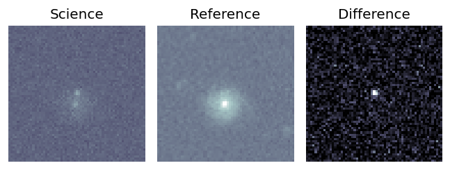
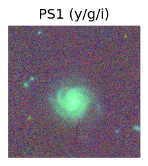
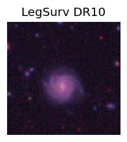
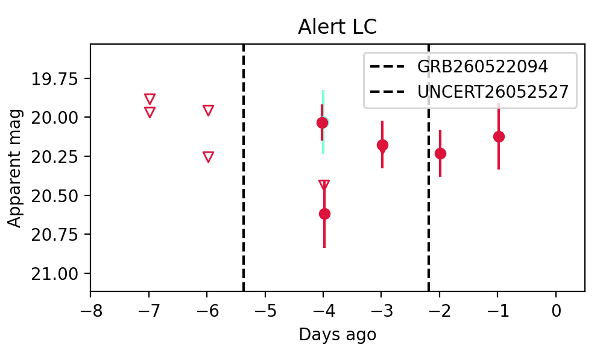
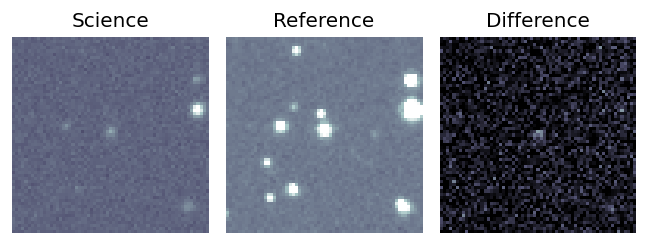
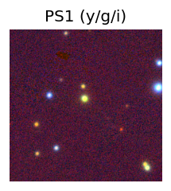
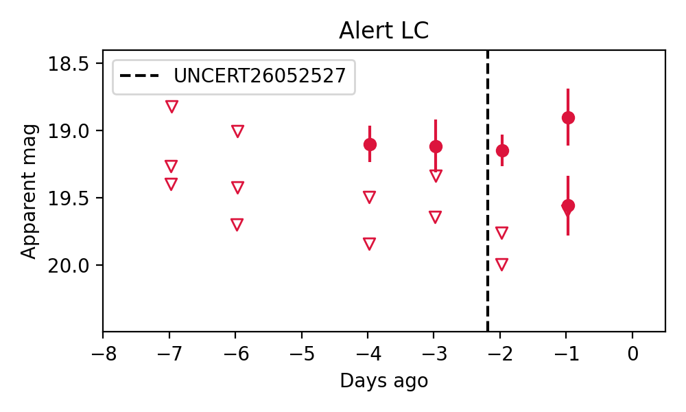

Candidate List 20260527Previous Day Next Day
Section 1: New Sources (age<1d) Section 2: Old (1-5d) sources observed last nightplaceholder
Section 1: New Afterglow/FBOT Cands Last Night (0)
Section 2: Older Sources Observed Last Night (3)
0. ZTF26aayghtu (Afterglow?) [Back to Top] [Share] [Trigger Swift] [Fritz] [Lasair]RA, Dec: 343.98897, 13.24593 22h55m57.35s, 13d14m45.36sGalactic (l, b): 84.51483, -40.85593 ext(g-r) = 0.047


TESS: Sectors [56 83]
SDSS (10 arcsec):Found SDSS phot-z: z=0.12; peak abs mag = -18.88
PS1: 0 sources in 3 arcsec
LegacySurvey: 1 sources in 3 arcsec Closest: d = 3.99 arcsec, 77.6 deg (east of north) photoz=1.37 (68% bounds 0.98, 2.09), type=PSF peak abs mag = -24.98 (68% bounds -24.07, -26.1)

Extinction-corrected gr color:
From alerts: -0.18 +/- 0.23 mag
Consistent with synchrotron, g-r>0!
Rise Rate:
g: -99 mag/day
r: 0.03 mag/day
i: -99 mag/day
Fade Rate:
g: -99 mag/day
r: 10.66 mag/day
i: -99 mag/day
1. ZTF26aaymnok (FBOT?) [Back to Top] [Share] [Trigger Swift] [Fritz] [Lasair]RA, Dec: 344.06681, 25.30922 22h56m16.03s, 25d18m33.20sGalactic (l, b): 92.51798, -30.67433 ext(g-r) = 0.187


TESS: Sectors [56 83]
SDSS (10 arcsec):Found SDSS phot-z: z=0.15; peak abs mag = -20.01
PS1: 0 sources in 3 arcsec
LegacySurvey: 1 sources in 3 arcsec Closest: d = 0.39 arcsec, 175.5 deg (east of north) photoz=0.17 (68% bounds 0.08, 0.23), type=SER peak abs mag = -19.85 (68% bounds -18.19, -20.64)

Rise Rate:
g: -99 mag/day
r: 0.25 mag/day
i: -99 mag/day
Fade Rate:
g: -99 mag/day
r: -99 mag/day
i: -99 mag/day
2. ZTF26aayuvpf (Afterglow?) [Back to Top] [Share] [Trigger Swift] [Fritz] [Lasair]RA, Dec: 20.88408, 49.53052 1h23m32.18s, 49d31m49.87sGalactic (l, b): 128.26767, -13.00839 ext(g-r) = 0.162


TESS: Sectors [17 18 58 85]
PS1: 0 sources in 3 arcsec
LegacySurvey: 0 sources in 3 arcsec

Rise Rate:
g: -99 mag/day
r: 1.09 mag/day
i: -99 mag/day
Fade Rate:
g: -99 mag/day
r: 0.89 mag/day
i: -99 mag/day